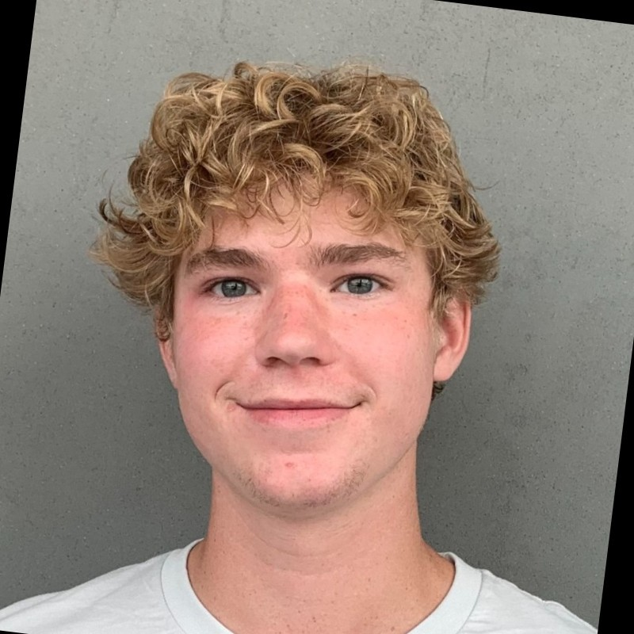

Home
About
Instructions
Meet the Team
Home
About
Instructions
Meet the Team
Who are We

Calvin Madsen, Sophomore in Computer Engineering
What he worked on: Backend, creating the RNN (Recurring Neural Network) that handled processing our project
Where to find Calvin:
LinkedIn
Pravar Annadanam, Freshman in Computer Science
What he worked on: frontend, building the website and integrating the python script as well as the Ai component with flask/django.
Where to find Pravar:
LinkedIn
Aadit Bennur, Freshman in Computer Science
What he worked on: frontend, building the website and integrating the python script as well as the Ai component with flask/django.
Where to find Aadit:
LinkedIn
John Slater, Freshman in Computer Science
What he worked on: backend, building the connection between the frontend and the algorithm. John worked to use the twitter API to formulate the connection we wanted.
Where to find John:
Personal Website
2020 All Rights Reserved. Design by
Free html Templates
Distributed by
ThemeWagon